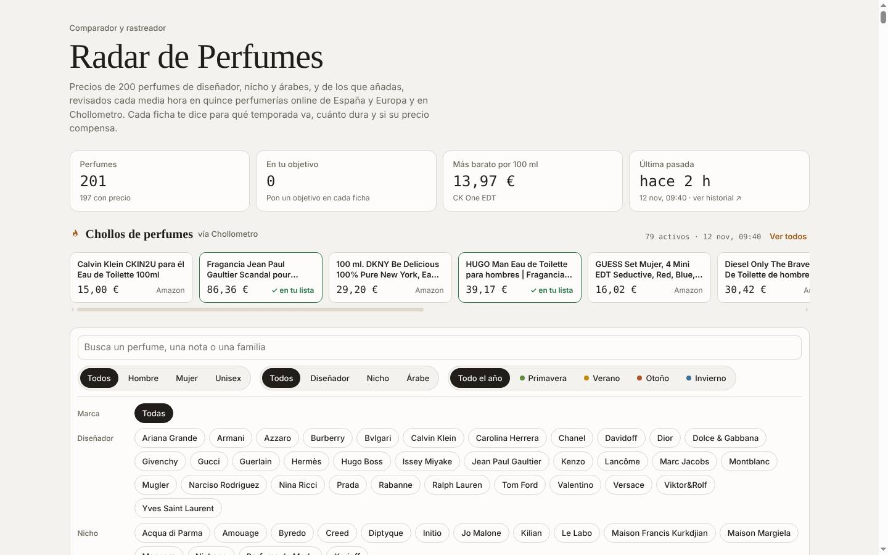
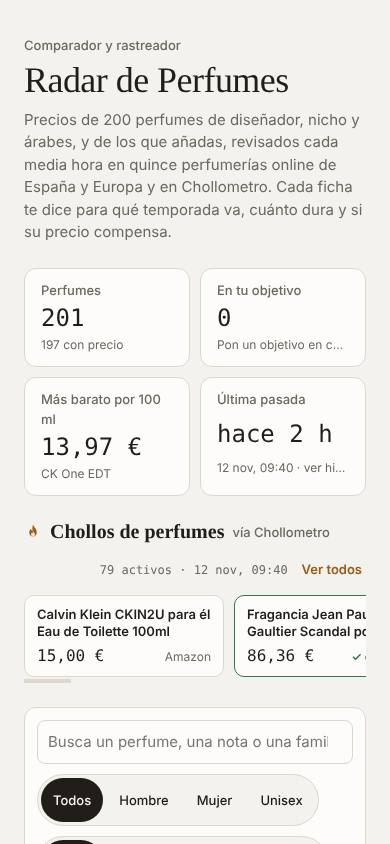
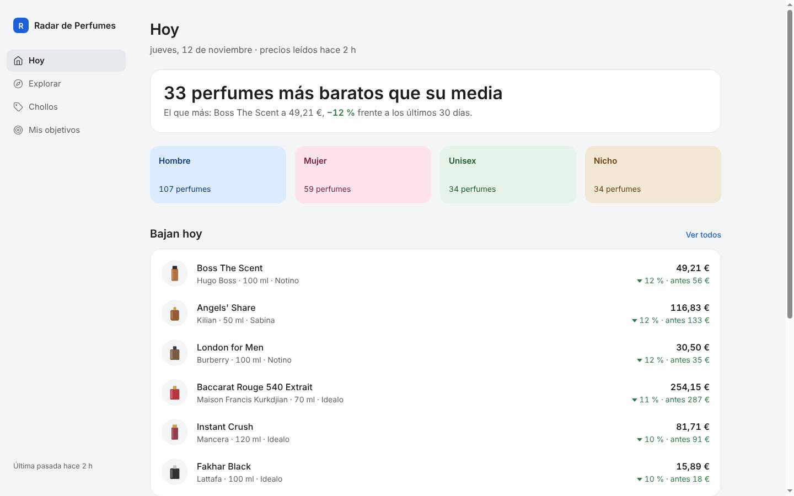
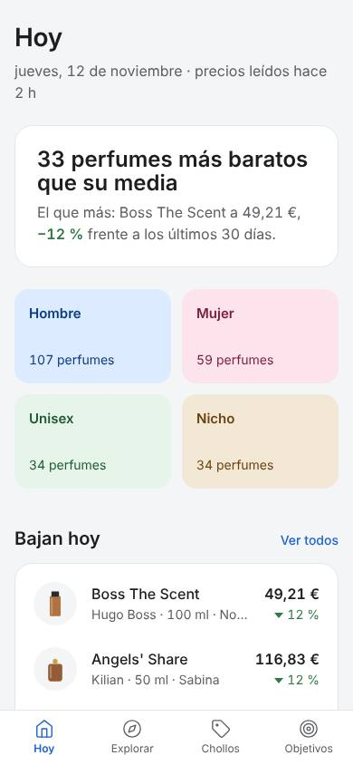

Revisión completa de la página actual (estructura, maquetación, diseño, interacción, móvil, accesibilidad, rendimiento y datos) y tres formas distintas de organizarla. Las tres maquetas funcionan con los precios reales que recoge la pasada automática.
El problema no es el color ni la letra, es la estructura. La página pinta los 200 perfumes de golpe como fichas iguales muy altas, y la información que buscas (qué ha bajado, dónde está más barato) queda enterrada: en el ordenador mide 44 pantallas de alto y en el móvil el primer perfume aparece tras dos pantallas y media de filtros.
Además, uno de cada cinco precios tiene más de una semana y se muestra igual que uno de hoy, así que el «mejor precio» a veces es un precio viejo.
Las tres maquetas resuelven lo mismo de tres maneras: menos ruido por perfume, filtros compactos, comparación de tiendas a la vista, antigüedad de cada precio y paginación.
Lo que hay ahora


Estructura y maquetación
Gravedad
Qué pasa y cómo se arregla
Alta
La página mide 44,2 pantallas en el ordenador y tiene 10.461 palabras: se pintan los 200 perfumes a la vez, sin paginar.Mostrar 24–40 y un botón «Mostrar más»; las tres maquetas lo hacen.
Alta
En el móvil, el primer perfume aparece tras unas 2,5 pantallas: título, párrafo, cuatro cifras, chollos y 53 botones de marca.Marca como desplegable o lista con buscador; filtros en una fila o en una hoja aparte.
Alta
La función principal, comparar tiendas, está plegada dentro de «Precios por tienda y fotos». En la tarjeta solo se ve un precio.Tabla de tiendas siempre visible en la ficha y nº de tiendas en el listado.
Alta
No hay jerarquía: todas las fichas pesan igual y lo que ha bajado no destaca. La bajada solo se intuye por el orden y por la gráfica pequeña.Una vista «Bajan hoy» con el % frente a la media de 30 días.
Media
Cada ficha apila 10 bloques (tamaños, familia, notas, temporadas, tres medidores, precio, etiquetas, objetivo, gráfica, desplegable): unos 650 px de alto en el móvil.Listado con lo justo para decidir (nombre, tamaño, mejor precio, tienda, bajada) y el resto en la ficha.
Media
La primera pantalla está pensada como portada (título de 56 px, párrafo de 4 líneas, cuatro cifras, una de ellas «En tu objetivo: 0»).Título de 24–32 px y una línea de estado; lo que ocupa la primera pantalla debe ser el contenido.
Media
No hay página propia por perfume ni enlace para compartirlo; los filtros no se guardan en la dirección.Las maquetas guardan filtros y orden en la URL; la Vitrina tiene enlace propio por perfume.
Diseño visual
Gravedad
Qué pasa y cómo se arregla
Media
Tres tipografías (Bodoni, Manrope y una monoespaciada en el 18 % del texto), cuerpo de 13 px con interlineado 1,3 y fondo crema #f4f2ee.Una familia para la interfaz (más una de titulares como mucho), cuerpo de 14–16 px y fondo neutro.
Baja
Los frascos dibujados son lo único propio del producto, pero se ven a 96 px.La Vitrina los convierte en la imagen principal de cada ficha.
Baja
Radios de esquina mezclados (14, 12, 10 y 0 px) y un ✓ de texto en los chollos.Un radio para paneles y otro para controles; sin símbolos sueltos.
Interacción y móvil
Gravedad
Qué pasa y cómo se arregla
Media
«Mi objetivo» es un campo en cada una de las 200 tarjetas y no hay sitio donde ver todos tus objetivos juntos.El campo va en la ficha y hay una vista «Mis objetivos» con lo que falta para llegar.
Media
La tira de chollos muestra los 79 activos mezclados, aunque solo 23 son de perfumes de tu lista.Separar los que coinciden con tu lista; el resto, en su propia vista.
Baja
Pulsar un tamaño que no se rastrea lo añade sin decirlo claramente (solo un borde discontinuo).Mostrar solo los tamaños que existen.
Baja
Ya corregido ayer: botones de 44 px en el móvil, avisos para lector de pantalla, etiquetas visibles en el formulario, estado vacío completo y botón Reintentar.Las maquetas lo mantienen.
Datos, fiabilidad y rendimiento
Gravedad
Qué pasa y cómo se arregla
Alta
193 de 945 precios (20 %) tienen más de 7 días y se muestran como si fueran de hoy. Ejemplo: el mejor precio de Boss The Scent (49,21 € en Notino) se leyó hace 34 días.Las maquetas indican «hace N días» junto a cada precio viejo. Más adelante convendría no contarlos como mejor precio.
Media
Notino bloquea 22 de cada 23 lecturas desde GitHub y Sephora todas. Lookfantastic descartaba sus 17 lecturas porque cogía 3,99 € (el envío).Lookfantastic: corregido hoy el lector, que se atascaba con las comillas del texto de la ficha. Lo confirmará la próxima pasada.
Media
El archivo de datos pesa 1,2 MB (13.032 puntos de historial) y se descarga entero en cada visita.Separar el historial en un archivo aparte que solo se pida al abrir una ficha.
Tres maquetas
Las tres usan los mismos datos y hacen lo mismo: buscar, filtrar por hombre, mujer o unisex, tipo, temporada y marca, ordenar, cambiar de tamaño, comparar tiendas, ver la evolución del precio, marcar un objetivo y ver los chollos. Lo que cambia es la organización de la página.
Pantalla oscura y densa, pensada para el ordenador y para comparar mucho de un vistazo. Arriba, lo que más baja hoy y la ficha del perfume elegido (gráfica con escala y fechas, tiendas y objetivo). Debajo, una tabla con columnas ordenables: mejor precio, tienda, precio por 100 ml, bajada frente a 30 días, número de tiendas y antigüedad del precio. En el móvil la tabla pasa a filas de dos líneas y la navegación baja a una barra inferior.
Catálogo claro para mirar, como una tienda: filtros fijos a la izquierda (la marca con su propio buscador), cuadrícula de frascos grandes sobre el color de cada perfume y una página propia por perfume con enlace compartible. En la página del perfume: precio grande, botón a la tienda más barata, tabla de tiendas con antigüedad, gráfica, cómo es y objetivo. En el móvil los filtros se abren en una hoja.
Pensada primero para el móvil y para una consulta rápida. Cuatro secciones en una barra inferior: Hoy, Explorar, Chollos y Mis objetivos. «Hoy» dice cuántos perfumes están por debajo de su media, da accesos directos a Hombre, Mujer, Unisex y Nicho, y lista lo que baja y los chollos de tu lista. Al tocar un perfume, su ficha sube desde abajo con el botón a la tienda más barata.


Cuál elegir
A · Comparador
B · Vitrina
C · Radar
Mejor en
Ordenador
Ordenador y tableta
Móvil
Para
Comparar muchos a la vez
Mirar y descubrir perfumes
Ver en 10 segundos qué ha bajado
Comparar tiendas
En la tabla y en la ficha
En la página del perfume
En la ficha
Lo que más destaca
Las cifras
Los frascos
Las bajadas de hoy
Riesgo
Fría para mirar; mucha cifra
Hay que entrar en cada perfume para comparar
Menos vista de conjunto en el ordenador
Mi recomendación: si lo consultas sobre todo desde el móvil, la C. Si lo usas en el ordenador para decidir compras, la A. Se pueden combinar: la «Hoy» de la C como portada y la tabla de la A en Explorar.